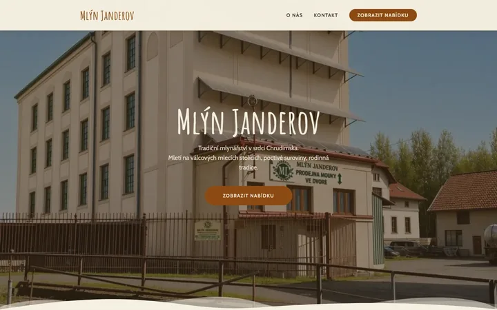

mlyn-janderov.czMlýn Janderov
Ing. Petr SchafferJsme maximálně spokojení. Pomáhal nám s tvorbou webových stránek a i když to s námi nebylo úplně jednoduché, vše se nakonec podařilo. Výsledek přesně odpovídá naší představě. Budeme i nadále v kontaktu. Doporučujeme.
Spuštěno za 6 dníPřípadová studie →